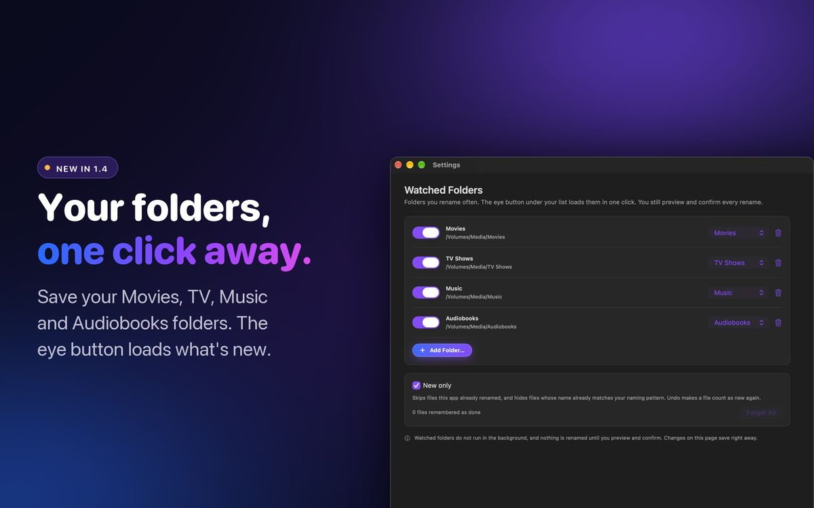

How to rename only the new files in a folder
You cleaned up the whole folder once. Now six new episodes have arrived and you only want to touch those six.
 By Buck Kettering· October 16, 2026· 6 min read
By Buck Kettering· October 16, 2026· 6 min read
The first rename of a library is the big one. Hundreds of files, a long preview, a lot of checking. After that the job changes. New files trickle in a few at a time, and the rest of the folder is already the way you want it. Running the whole thing again every time is slow, it hits the online lookups for files that do not need them, and it gives a tool the chance to "fix" a name you corrected by hand.
So the real question for a working library is not how to rename a folder. It is how to rename only what is new in it.
Why re-running the whole folder is a bad habit
It looks harmless, because a file that already has the right name should come out unchanged. In practice three things go wrong:
- Lookups drift. Online databases change. An episode title gets corrected, a movie gets a different year, a show gets a new canonical name. Re-run the lookup a month later and a file you were happy with gets a different name.
- Your hand fixes get undone. If you edited a name in the preview because the match was wrong, the next full run will match it wrong again.
- The preview gets too long to read. Six real changes buried in four hundred "unchanged" rows is how mistakes get through. A preview only protects you if you actually read it.
Option 1: an inbox folder
The simplest pattern, and it works with any renamer. New files never land in the library directly. They land in an Incoming folder. You rename everything in Incoming, check it, then move the results into the library.
Media/
Incoming/ ← downloads and rips land here
Movies/ ← only clean, renamed files
TV Shows/Because Incoming only ever holds new files, "rename the whole folder" and "rename only the new files" become the same thing. The cost is one extra move every time, and if your media server watches the library folder, it will not see anything until you do that move.
Option 2: sort by date added
If you would rather keep files where they land, Finder can show you what is new. In list view, add the Date Added column and sort by it. Select the files above the point where you last renamed, and hand only those to your renamer.
It works, but it relies on you remembering where you stopped, and Date Added is per folder. On some network shares it is missing or wrong, so files can sort in the wrong place.
Option 3: let the tool remember what is done
The cleaner fix is for the renamer to keep a record. For that to be safe, "done" has to mean the right things:
- Files the tool renamed itself. Once a file has been through a confirmed rename, it is done. Its new path gets recorded.
- Files that already have the right name. A file you named by hand, or one that arrived correctly named, is also done. There is nothing to change, so it should not clutter the preview.
- Undo has to reverse it. If you undo a rename, those files go back to their old names, so they must count as new again. Otherwise they would be skipped forever with the wrong name.
- A template change has to reset it. If you change how you want files named, every "done" file is now wrong. The record needs a way to be cleared.
Get any of those wrong and a "new only" feature quietly skips files that need work, which is worse than having no feature at all.
The NAS problem: folders that are not there
Libraries usually live on an external drive or a NAS share. Those are not always mounted. A saved folder pointing at /Volumes/Media/Movies while the drive is unplugged should not fail silently, and it definitely should not quietly fall back to an empty folder and report "nothing new". You want to be told the folder is unavailable, so you know to mount it, rather than believing there was nothing to do.
Rule of thumb: "nothing new" and "could not look" must never look the same. If your tool cannot tell them apart, check the drive is mounted before you trust an empty result.
How Watched Folders work in Media Renamer Pro 1.4
This is the workflow I built into Media Renamer Pro 1.4, after a customer mocked up how they wanted it to work. It follows the rules above.

Set it up once
- Open Settings → Watched Folders and click Add Folder.
- Pick the folder, for example your shared Movies folder, and give it a type: Movies, TV Shows, Music or Audiobooks.
- Leave New only on. It is on by default.
Watched folders are kept separately from your naming settings and saved straight away. Resetting your templates does not remove them.
Load what is new
- Choose the media type you are renaming, for example TV Shows.
- Click the eye button under your file list. It loads every enabled watched folder of that type. It never switches your media type for you.
- Press Preview. Files that already match your naming pattern are hidden, so the preview shows only what will actually change.
- Check the plan and press Rename. Those files are now remembered as done.
The small arrow next to the eye button lets you load just one folder, turn New only off for a run, or jump to the settings page.

What counts as done
- Every file the app renames is recorded by its new path. The settings page shows how many files are remembered as done.
- Files whose name already matches your pattern are hidden from the preview and remembered too.
- Undo makes a file count as new again, so an undone rename shows up next time.
- For Movies and TV, each file is checked on its own. For Music and Audiobooks, where a folder is one album or one book, a folder is skipped only when every file in it is done.
Drives that are not connected
If a watched folder is on a drive or NAS share that is not mounted, it shows as Unavailable in Settings and in the eye menu, and you get an error instead of an empty list. Mount the share in Finder and load again.
It does not run in the background
This is on purpose. Nothing watches your folders while the app is closed, and nothing is renamed until you preview and confirm. "Watched" means the app knows where to look when you ask it to, not that it acts on its own.
Gotchas worth knowing
- Changed your naming template? Files remembered as done were done under the old template. Turn New only off for one run, or use Forget All in Settings → Watched Folders, so everything gets checked against the new pattern.
- Very large folders take a moment to scan. Loading a folder with thousands of files reads every name first, the same as a normal preview does.
- Files mode or Folders mode. In Files mode the eye button loads the files inside the watched folder. In Folders mode it loads the folders inside it, never the watched folder itself, so a Movies folder full of movie folders works the way you would expect.
Adding a few files by hand
Sometimes the new files are not in a watched folder at all. In 1.4 the + button under the file list adds more files or folders to the list you already have, instead of starting over. The same file is never added twice, even if it sits inside a folder you already added. The − button only takes a row off the list. It never touches the file on disk.
Quick checklist
- Keep new arrivals separate, either in an inbox folder or by letting your tool remember what is done
- Make sure "done" includes files that already have the right name
- After an undo, the undone files should be treated as new
- After changing your naming template, clear the done list once
- Mount the NAS or drive before trusting a "nothing new" result
- Still read the preview. Six rows is quick to check
I build Media Renamer Pro, the Mac, iPad and iPhone app described in the second half of this guide. The inbox folder and Date Added approaches work with any renamer.